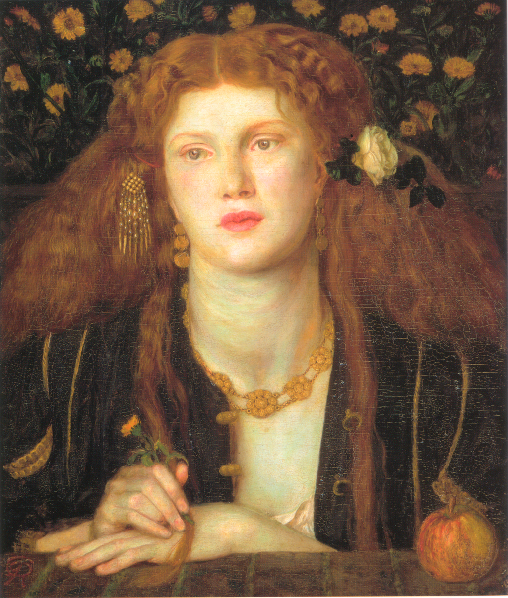

<head>
<meta charset="UTF-8" />
<meta name="keywords" content="drawing, painting" />
<meta name="description" content="drawings by Sunjy" />
<title>Sunjy</title>
<link rel="shortcut icon" type="image/x-icon" href="../../mImages/mCommon/favicon.ico" media="screen" />
<link rel="stylesheet" type="text/css" href="../../mCsses/mCommon/mCssA.css" />
<link rel="stylesheet" type="text/css" href="../../mCsses/mCommon/mCssB.css" />
<link rel="stylesheet" type="text/css" href="../../mCsses/mCommon/mCssC.css" />
<link rel="stylesheet" type="text/css" href="../../mCsses/mCommon/mCssD.css" />
<link rel="stylesheet" type="text/css" href="../../mCsses/mContent/mCssA.css" />
<link rel="stylesheet" type="text/css" href="../../mCsses/mContent/mCssB.css" />
<link rel="stylesheet" type="text/css" href="../../mCsses/mContent/mCssC.css" />
<link rel="stylesheet" type="text/css" href="../../mCsses/mContent/mCssD.css" />
</head>
<script type="text/javascript" src="../../mScripts/mContent/mContentAA.js" /></script>
<script type="text/javascript" src="../../mScripts/mContent/mContentAB.js" /></script>
<script type="text/javascript" src="../../mScripts/mContent/mContentAC.js" /></script>
<script type="text/javascript" src="../../mScripts/mContent/mContentAD.js" /></script>
<script type="text/javascript"></script> 
<script type="text/javascript">
document.write('<div class="mImgAbsolute"></div>');
/*
document.write('<p class="mFontSizeBColor" />From a white paper...</p>');
document.write('<table class="center"><tr><td>');
document.write('');
document.write('</td></tr></table>');
*/
</script>


<script type="text/javascript">
document.write('<p class="mFontSizeBColor" />Bocca Baciata</p>');
document.write('<p class="mFontSizeSColor" />“Bocca Baciata” by Dante Gabriel Rossetti depicts a beautiful Saracen princess who, despite having relationships on numerous occasions with eight separate lovers in the space of four years, successfully presents herself to the King of the Algarve as his virgin bride.<br><br>The title means “mouth that has been kissed.” The title refers to an Italian proverb, which Rossetti wrote on the back of the painting:<br><br>“‘The mouth that has been kissed does not lose its good fortune:<br>rather, it renews itself just as the moon does.”<br><br>The proverb comes from the conclusion of Alatiel’s story.<br><br>Rossetti was a translator of early Italian literature, and he knew the proverb from Boccaccio’s book called Decameron. The Decameron, also nicknamed “the Human Comedy,” is a collection of novellas by the 14th-century Italian Giovanni Boccaccio (1313–1375).<br><br>The Decameron contains 100 tales told by a group of ten young people in seclusion from the Black Death, which was afflicting the Florance.<br><br>In the story, Alatiel is the daughter of the sultan of Babylon. She was promised to the king of Algarve in return for his assistance with an invading army. The sultan sent Alatiel on a ship to meet her future husband.<br><br>Unfortunately, a storm sends the ship off course, and her crew abandons ship, leaving Alatiel and her ladies-in-waiting with no male protection. What follows are four years in Alatiel’s journey of survival and multiple lovers before she can return home.<br><br>Eventually, she returns to her father and tells him that she was shipwrecked and taken into a nunnery where she lied about who she was, fearing that she would be thrown out for not being a Christian. She claimed that she was there in seclusion until she found the opportunity to return home.<br><br>The sultan was pleased to have his daughter back and made arrangements to have her married to the king of Algarve. Alatiel convinces the king of her virginity, and they live happily ever after.<br><br>The painting, completed in 1859, represents a turning point in Rossetti’s artistic career. It depicts Fanny Cornforth, his main inspiration for sensuous figures.<br><br>This painting was the first of his pictures to focus on a single female figure. It established the style that was later to become a signature of his work. <br></p>');
document.write('<table class="center" /><tr><td>');
document.write('<br>The title means “mouth that has been kissed.” The title refers to an Italian proverb, which Rossetti wrote on the back of the painting:<br><br>“‘The mouth that has been kissed does not lose its good fortune:<br>rather, it renews itself just as the moon does.”<br><br>The proverb comes from the conclusion of Alatiel’s story.<br><br>Rossetti was a translator of early Italian literature, and he knew the proverb from Boccaccio’s book called Decameron. The Decameron, also nicknamed “the Human Comedy,” is a collection of novellas by the 14th-century Italian Giovanni Boccaccio (1313–1375).<br><br>The Decameron contains 100 tales told by a group of ten young people in seclusion from the Black Death, which was afflicting the Florance.<br><br>In the story, Alatiel is the daughter of the sultan of Babylon. She was promised to the king of Algarve in return for his assistance with an invading army. The sultan sent Alatiel on a ship to meet her future husband.<br><br>Unfortunately, a storm sends the ship off course, and her crew abandons ship, leaving Alatiel and her ladies-in-waiting with no male protection. What follows are four years in Alatiel’s journey of survival and multiple lovers before she can return home.<br><br>Eventually, she returns to her father and tells him that she was shipwrecked and taken into a nunnery where she lied about who she was, fearing that she would be thrown out for not being a Christian. She claimed that she was there in seclusion until she found the opportunity to return home.<br><br>The sultan was pleased to have his daughter back and made arrangements to have her married to the king of Algarve. Alatiel convinces the king of her virginity, and they live happily ever after.<br><br>The painting, completed in 1859, represents a turning point in Rossetti’s artistic career. It depicts Fanny Cornforth, his main inspiration for sensuous figures.<br><br>This painting was the first of his pictures to focus on a single female figure. It established the style that was later to become a signature of his work. <br>" />');
document.write('</td></tr></table>');
</script>


